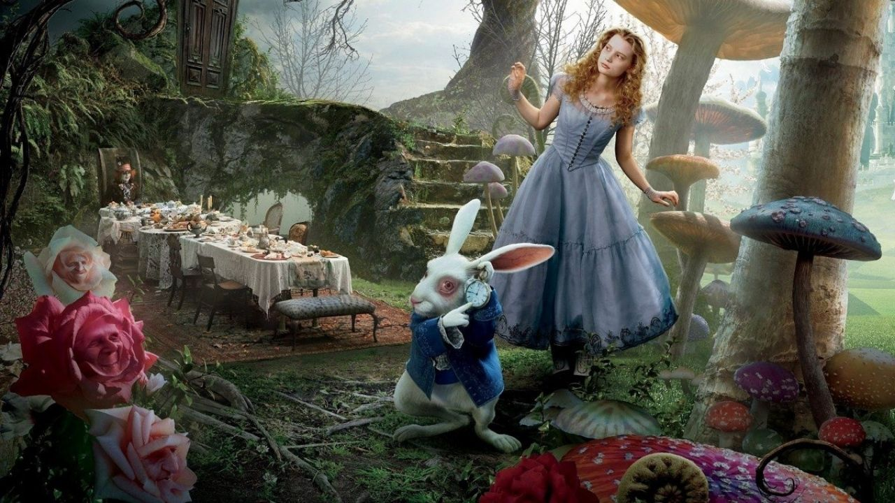
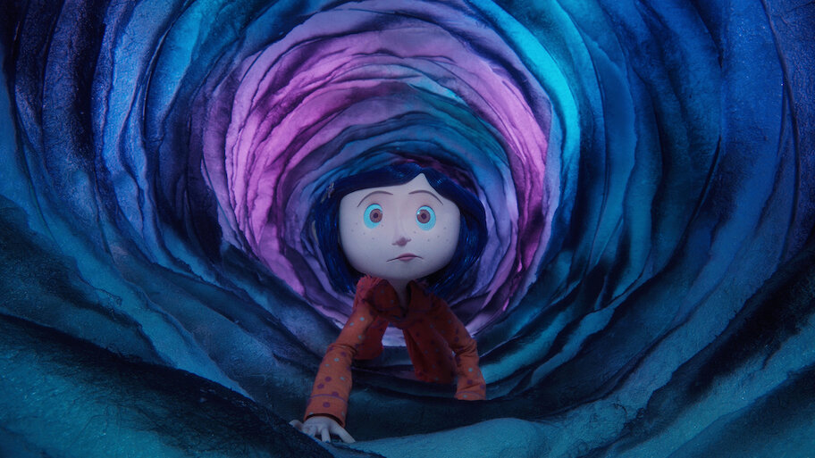
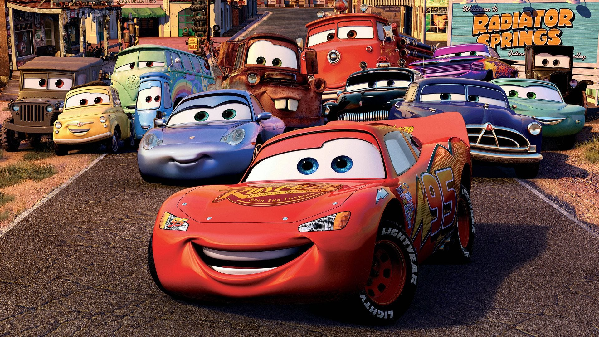

Alice no País das Maravilhas

A teoria diz que o País das Maravilhas representa o crescimento de Alice e os desafios de deixar a infância para trás.
Coraline

Muitos acreditam que a Outra Mãe já capturou dezenas de crianças antes de Coraline e existe há séculos.
Toy Story

Uma teoria famosa afirma que os brinquedos possuem uma regra secreta que os obriga a ficar imóveis perto dos humanos.
O Rei Leão
Alguns fãs acreditam que Scar não era irmão biológico de Mufasa, explicando suas diferenças físicas.
Carros

Uma teoria sugere que os humanos existiram no universo de Carros, mas desapareceram após uma revolução das máquinas.